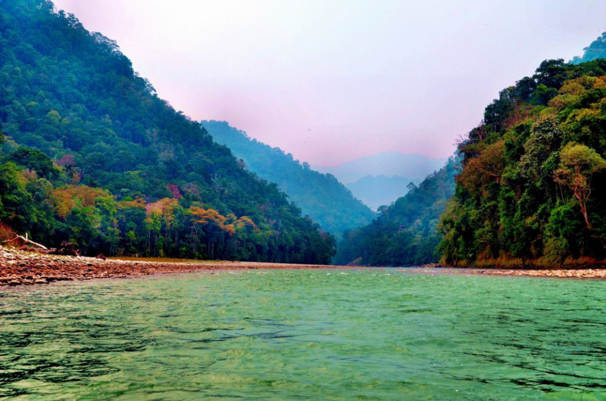
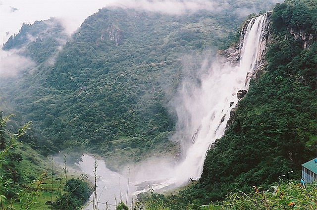
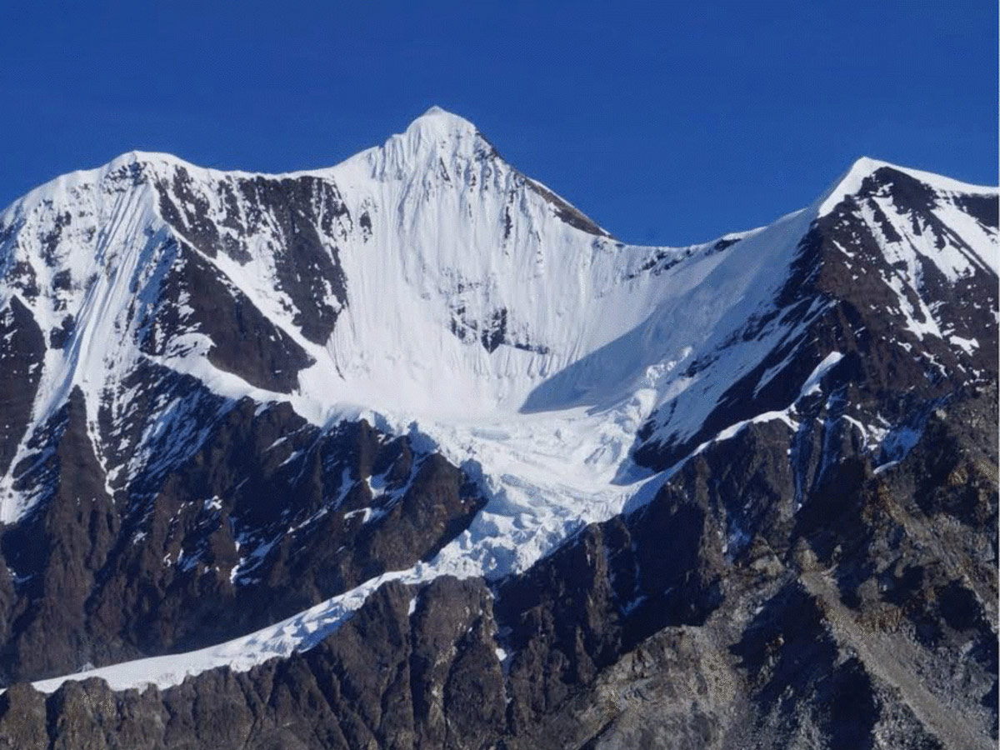
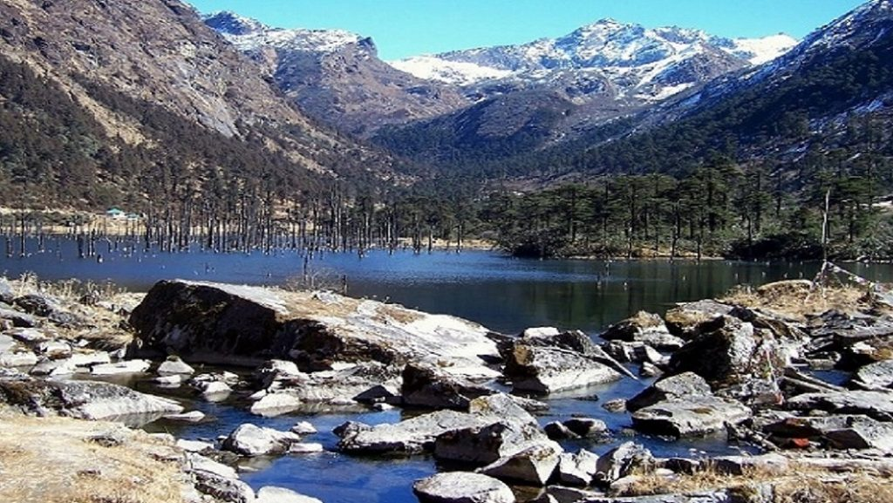
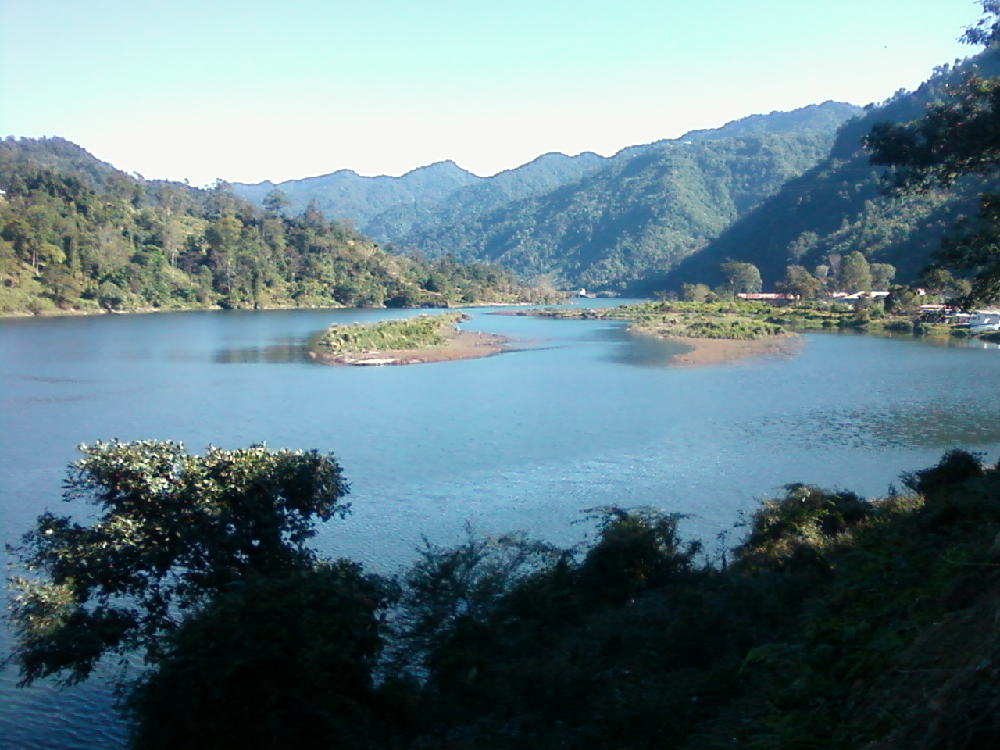
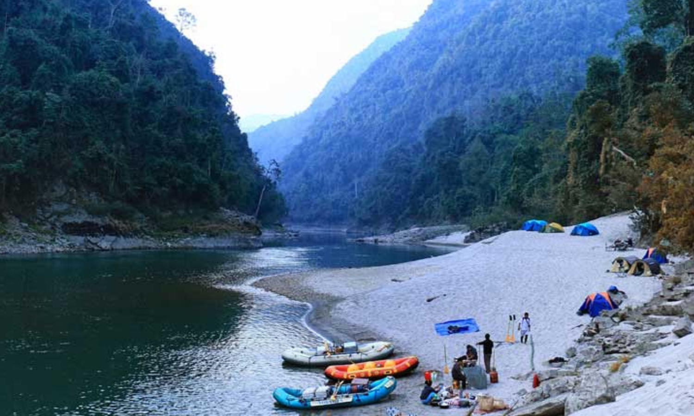

NAMDAPHA NATIONAL PARK
The third largest national park i the country,area-wise,Namdapha National Park is located in Arunachal Pradesh.Namdapha National Park is a gem for any wildlife and nature lover.With its altitude varying between 200 meters to 4500 meters,it is a heaven of rare and endangered animal and plant species with one of the most vibrant biodiversities in the country.It is here that you can spot species such as Snow Leopard,Clouded Leopard,Leopard,and Tiger.Namdapha National Park is located at a mere distance of 160 km from the capital of Assam.
NURANANG FALLS
A largely unknown place,deep in the forest of Tawang,Nuranang Falls offer a pristine and beautiful experience.One of the most spectacular waterfalls in the country,the Nuranang Falls are a beautiful white sheet of water that descends from the height of about 100 meters.Part of the Nuranang River which originates at Sela Pass,Nuranang Falls is largely unknown to the popular tourist trail making it an offbeat and tranquil spot.Popular as the BTK waterfall,the Bap Ten Kang has crystal clear water which elevates your spirits and encourages you to indulge in swimming.
GORICHEN PEAK
Gorichen Peak is the highest peak of Arunachal Pradesh and it is located between Tawang and West Kameng districts of Arunachal Pradesh.Situated at an altitude of 22,500 feet above sea level,this peak is roughly 164 kilometer from Tawang.The peak is locally known as Sa-Nga Phu,which literally means the kingdom of Deity and is considered to be one of the sacred peaks protecting them from all the evils according to the local Monpa tribe.This peak is a great trekking and mountaineering spot.
MADHURI LAKE
Being home to the Himalayas,Arunachal Pradesh is home to many beautiful lakes but none as beautiful and encapturing as the Madhuri lake also known as Sangetsar Lake.One of the remotest lakes of the country and perhaps of the world as well,Sangetsar and Madhuri Lake is a breathtaking combination of rocky mountains and an ever-present lake whose beauty is beyond spell binding.The lake was made popular due to its appearance in the Bollywood movie Koyla and is also known as Madhuri Lake named after in the movie.
ITANAGAR
Itanagar is the capital of the northeast Indian state of Arunachal Pradesh. Set in the foothills of the Himalayas, the city is home to medieval Ita Fort and the Jawaharlal Nehru State Museum, which exhibits textiles and handicrafts. The nearby Gompa, a yellow-roofed Buddhist temple, was consecrated by the Dalai Lama. West of town is Geker Sinying, also known as Ganga Lake, surrounded by forests, orchids and ferns.
TAWANG

Located at a height of about 3048m, is known for many important and beautiful monasteries and is famous for being the birthplace of the 6th Dalai Lama, Tsangyang Gyatso.The beautiful town of Tawang, also pronounced as Dawang has many sceneries to make your trip a picturesque one. However, what begins to define the area is its significance for Buddhist monks. Tawang is the place to go for monasteries, with the Tawang Monastery being the most popular one and extremely sacred for the Buddhists. Tawang is a place which will flatter you with its natural beauty wrapped in the scent of spirituality. The beautiful orchid sanctuary and the Tipi Orchid Sanctuary is also an ideal place for your list of places to visit. Along with this one can have their taste buds to have an experience of Tawang by indulging into the area's unique cuisine.
PASIGHAT
Pasighat is the headquarters of East Siang district in the Indian state of Arunachal Pradesh. Situated at the eastern foothills of the Himalayas at 155 meters above mean sea level, Pasighat is Arunachal's oldest town.Pasighat is the land of the mighty Siang and indigenous hanging bridges. A waterfall graces the mountain cliffs and chills the vicinity. Attractions in the town include: The Daying Ering Wildlife Sanctuary in Arunachal Pradesh, India is one of the most popular wildlife parks of the state.